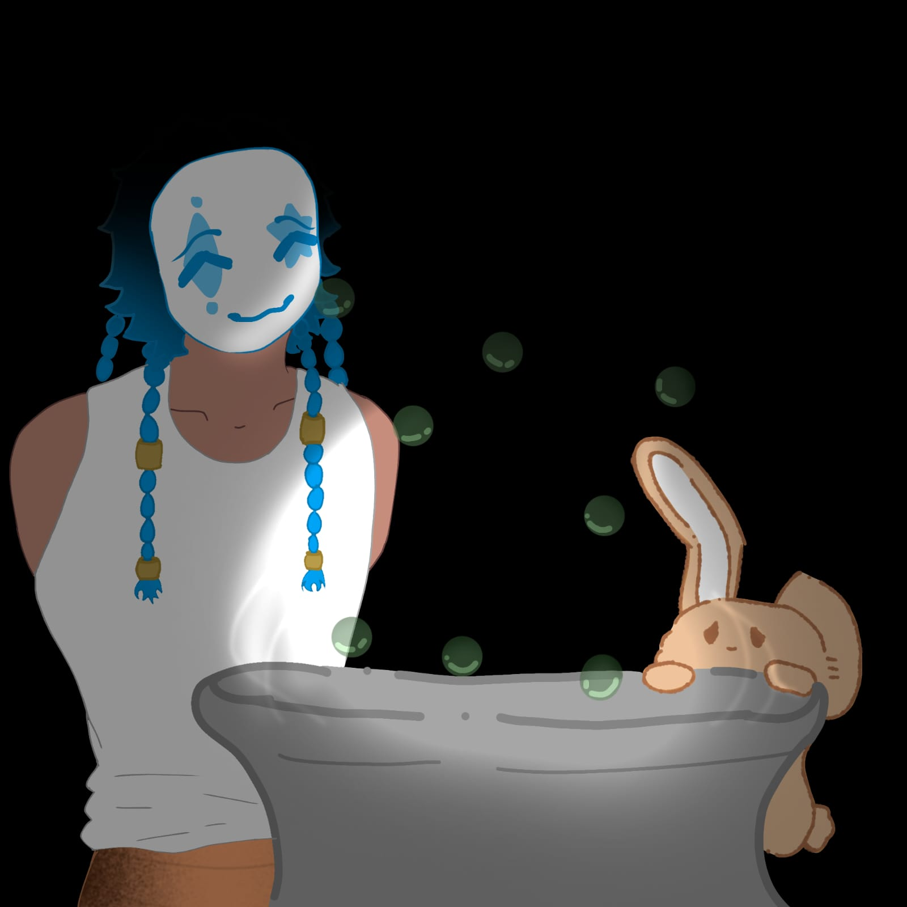
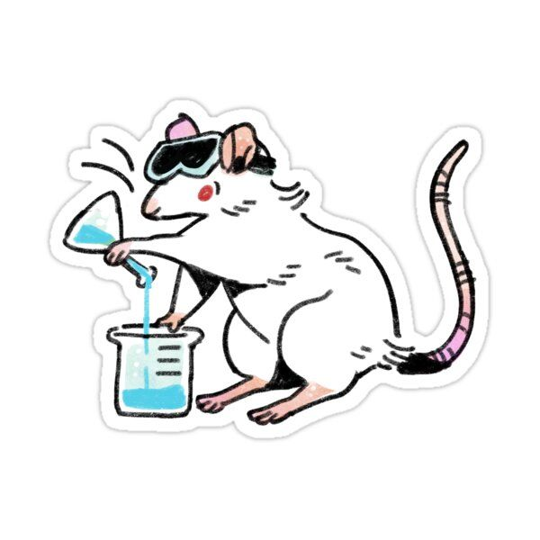
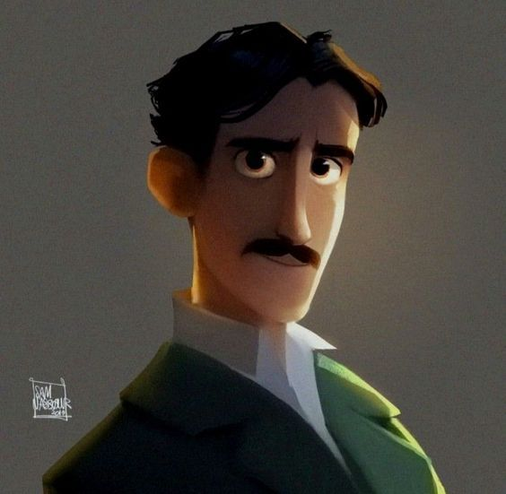

¡Hola! Soy la ratita del sistema.

Creo personajes y me encargo de diseñarlos, crear su historia y subirlos a mi página de Instagram. Por el momento he subido 2 en colaboración con un amigo, mis favoritos son Jack y el pequeño terry, uno un cientifico el cual se encarga de mantener secretos en una organizacion encargada de proteger a la gente comun, e pequeño terry es un conejo que tiene a su amigo la boa, detras de eso lo que nadie sabe es que el pequeño terry es un humano en una botarga atento las 24/7 para que la titanoboa que tiene de amigo se lo trage

Me gusta realizar manualidades porque me permiten expresar mi creatividad y crear objetos únicos con diferentes materiales. Es una actividad relajante que disfruto en mi tiempo libre y que me ayuda a desarrollar mi imaginación y paciencia.
Me gusta escribir escenarios que llegan a mi mente al compás de la música, creando historias para mis personajes que luego comparto con gente de confianza, mi favorito es sobre Doied, un cientifico que desde niño solo fue planeado y creado por dos cientificos, eran dos pero se comio a su hermana y desde entonces lo detestan, su madre experimento con el para tener un resultado para que un hombre tenga un bebe y su padre en darle genes aractnidos y de roedores, actualmente es un cientifico que hace lo mismo

Me he centrado mucho en investigaciones de todo tipo tanto cientificas como del ambito humano, Sabian que un asesino serial para ser uno necesita matar por separado entre de 3 meses de tiempo? otra investigacion sobre lo que me fije es sobre mi proyecto caballito de mar, unos de mis temas favoritos en casos de asesinos seriales es Charles mason, un caso tan tonto pero tan increible que me deja sin palabras aunque tambien estoy muy fijada en un cientifico, me gusta mucho lo que creo tanto como fue el, Nicola tesla, sin duda son dos ejemplos grandes de mis gustos en investigacion
